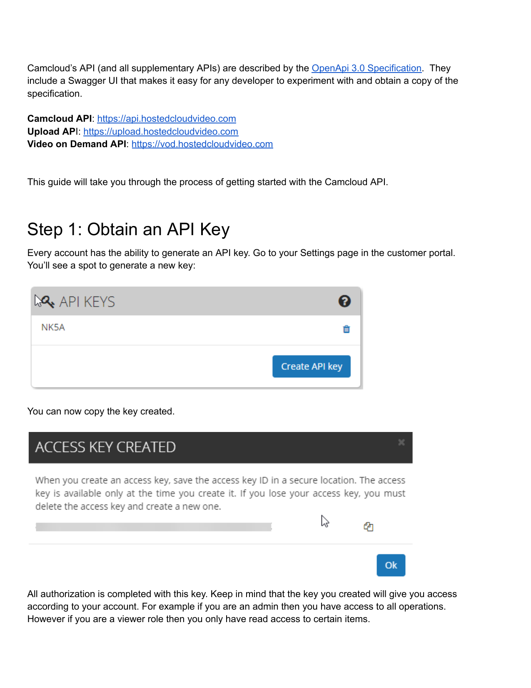

Quick Start – Integrate with Camcloud REST API in 5 Steps
This concise guide walks you from obtaining an API key to pulling your very first snapshot, leveraging the live Swagger UI so you can copy‑paste IDs directly into your code.
1. Generate an API Key
In the Camcloud portal open Settings → API Keys, press Create and copy the key that appears (it’s shown only once).
2. Authorise in Swagger
Go to https://api.hostedcloudvideo.com, click Authorize, paste the key into the bearerAuth field and confirm.
3. Discover your accountId
Run POST /v1/authorizeV2. The response payload contains accountId, userUuid and your role.
{{
"accountId": "123456",
"userUuid": "550e8400-e29b-41d4-a716-446655440000",
...
}}4. List cameras & capture a cameraId
Call GET /v1/accounts/<accountId>/cameras or execute ListCamerasV1 in Swagger. Copy one id value for the next step.
curl -H "Authorization: Bearer <API_KEY>" \
https://api.hostedcloudvideo.com/v1/accounts/<ACCOUNT_ID>/cameras
5. Pull your first snapshot
Fetch a live JPEG (or add ?time=ISO-8601 for historical) via /v1/cameras/<cameraId>/snapshot.
import os, requests
BASE = "https://api.hostedcloudvideo.com"
CAM = "<CAMERA_ID>"
API = os.environ["API_KEY"]
snap = requests.get(f"{BASE}/v1/cameras/{CAM}/snapshot",
headers={{"Authorization": f"Bearer {API}"}}).content
open("latest.jpg","wb").write(snap)
Cheat‑Sheet: Common Endpoints
| Endpoint | Method | Purpose |
|---|---|---|
| /v1/cameras | GET | List cameras (account‑wide) |
| /v1/cameras | POST | Add a new camera (P2P, ONVIF, RTSP) |
| /v1/cameras/{{cameraId}} | PUT | Rename / change timezone |
| /v1/cameras/{{cameraId}}/snapshot | GET | Live or historical JPEG |
| /v1/accounts/{{accountId}}/health | GET | One‑line health status |
Next Steps
- Copy ready‑made code on the Examples page (Python, PHP, cURL).
- Dive into the full OpenAPI spec for advanced features (AI analytics, exports, schedules).